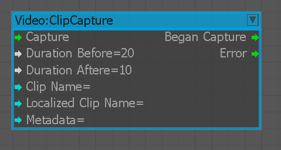
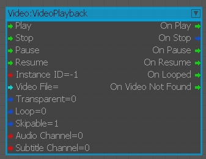

Video:ClipCapture
Used to capture video clips while a game is running and save them locally or to the cloud.

Inputs
| Port | Type | Description |
|---|---|---|
| Capture | Any | Begins capturing a video clip |
| DurationBefore | Float | Records the specified number of seconds before theCapture input triggers |
| DurationAfter | Float | Records the specified number of seconds after theCapture input triggers |
| ClipName | String | Usage details are specific to the operating system |
| LocalizedClipName | String | Usage details are specific to the operating system |
| Metadata | String | (Optional) Tags video clips |
Outputs
| Port | Type | Description |
|---|---|---|
| BeganCapture | Any | Triggers when video clip capturing begins |
| Error | Any | Triggers when a clip capture error occurs |
Video:VideoPlayback
Video player node that is using USMPlayer UIElement.
